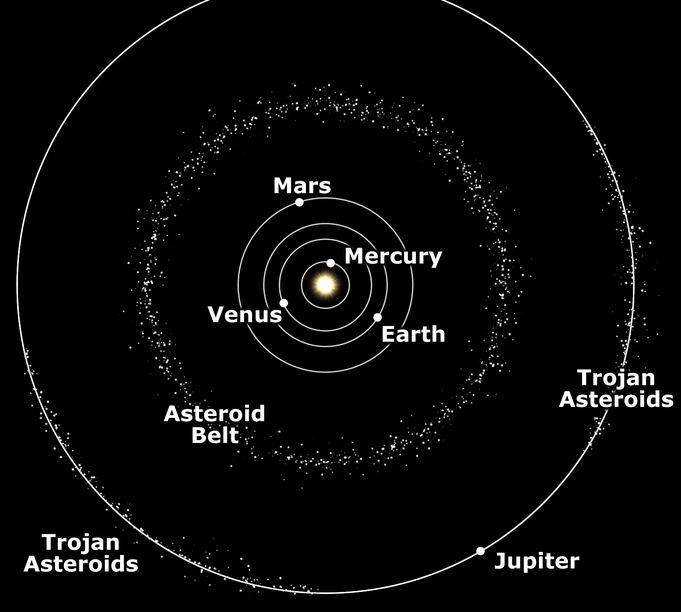
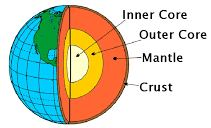
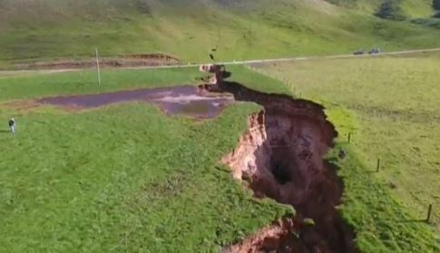

The Surah narrates the method of establishing the Truth firmly. It suggests calling people using signs and arguments that point to the existence of God and the reality of Judgment Day.
সূরাটি সত্যকে দৃঢ়ভাবে প্রতিষ্ঠা করার পদ্ধতি বর্ণনা করে। এটি ঈশ্বরের অস্তিত্ব এবং বিচার দিবসের বাস্তবতা নির্দেশ করে এমন লক্ষণ এবং যুক্তি ব্যবহার করে লোকেদের ডাকার পরামর্শ দেয়।
Segment 1: The Focal Point of Preaching
সেগমেন্ট 1: প্রচারের কেন্দ্রবিন্দু
Segment 2: Easy Come Easy Go
সেগমেন্ট 2: ইজি কাম ইজি গো
Segment 3: Preaching by Prophet Muhammad (pbuh)—a Path of Struggle
সেগমেন্ট 3: নবী মুহাম্মদ (সাঃ)-এর প্রচার - সংগ্রামের পথ
Praise be to God, to Whom belong all things in the Skies and Lands, to Him be praise in the hereafter, and He is Full of Wisdom, Acquainted with all things. He knows all that goes into the earth and all that comes out thereof, all that comes down from the sky, and all that ascends thereto, and He is the Most Merciful, the Oft- Forgiving.
সমস্ত প্রশংসা আল্লাহ্র জন্য, যাঁর কাছে আকাশ ও জমিনের সমস্ত কিছু, আখেরাতে তাঁরই প্রশংসা, এবং তিনি প্রজ্ঞাময়, সমস্ত কিছুর সাথে জ্ঞাত। তিনি জানেন যা কিছু পৃথিবীতে প্রবেশ করে এবং যা কিছু তার থেকে বের হয়, যা কিছু আকাশ থেকে নেমে আসে এবং যা কিছু তাতে আরোহণ করে এবং তিনি পরম করুণাময়, ক্ষমাশীল।
The Unbelievers say, "Never to us will come the Hour". Say, "Nay! But most surely, by my Lord, it will come upon you by Him Who knows the unseen; from Whom is not hidden the least little particle in the Skies or on the Lands. Nor is there anything less than that or greater but is in the Record Perspicuous that He may reward those who believe and work deeds of righteousness—for such is forgiveness and a sustenance most generous." But those who strive against Our verses to frustrate them, for such will be a penalty, a punishment most humiliating. Section 3 of Chapter 34 [Verse 6-9]: A Truth from Lord
কাফেররা বলে, “আমাদের কাছে কখনই কেয়ামত আসবে না”। বলুন, "না! তবে অবশ্যই, আমার পালনকর্তার কসম, এটি অবশ্যই তোমাদের উপর আসবে তাঁর দ্বারা যিনি অদৃশ্য জানেন; যাঁর কাছ থেকে আকাশে বা যমীনে সামান্যতম কণাও লুকানো যায় না। এবং এর চেয়ে কম বা বড় কিছু নেই তবে লিপিবদ্ধ রয়েছে যাতে তিনি তাদের প্রতিদান দিতে পারেন যারা ঈমান আনে এবং কাজ করে - এই ধরনের সৎকর্ম এবং ক্ষমার জন্য সবচেয়ে বেশি ক্ষমা।" কিন্তু যারা তাদের নিরাশ করার জন্য আমার আয়াতের বিরুদ্ধে প্রচেষ্টা চালায়, তাদের জন্য রয়েছে শাস্তি, সবচেয়ে অপমানজনক শাস্তি। অধ্যায় 34 এর অধ্যায় 3 [পদ 6-9]: প্রভুর কাছ থেকে একটি সত্য
And those who have been given knowledge see that which is sent down to thee from thy Lord is the Truth, and that it guides to the Path of the Exalted in Might, Worthy of all Praise. The Unbelievers say: "Shall we point out to you a man that will tell you: when you are fully disintegrated into dust with full dispersion, then you shall be created anew? Has he invented a falsehood against God, or has a spirit (seized) him?" Nay, it is those who believe not in the hereafter that are in penalty and in the farthest error. See they not what is before them and behind them of the Sky and Earth? If We wished, We could cause the Earth to swallow them up, or let fall upon them fragments from the Sky. Verily, in this is a sign for every devotee that turns to God.
আর যাদেরকে জ্ঞান দান করা হয়েছে তারা দেখতে পায় যে আপনার প্রতি আপনার পালনকর্তার পক্ষ থেকে যা অবতীর্ণ হয়েছে তা সত্য এবং তা প্রশংসিত মহান আল্লাহর পথে পরিচালিত করে। কাফেররা বলে: "আমরা কি তোমাদের এমন একজন লোককে দেখাবো যে তোমাকে বলবে: যখন তুমি সম্পূর্ণরূপে ধূলিকণা হয়ে বিচ্ছুরিত হয়ে যাবে, তখন তোমাকে নতুন করে সৃষ্টি করা হবে? সে কি আল্লাহর বিরুদ্ধে মিথ্যা উদ্ভাবন করেছে, নাকি কোন আত্মা তাকে পাকড়াও করেছে?" বরং যারা আখিরাতে বিশ্বাস করে না তারাই শাস্তি ও সুদূরতম ভ্রান্তিতে রয়েছে। তারা কি তাদের সামনে ও পেছনে আকাশ ও পৃথিবীর কি আছে তা দেখে না? আমরা ইচ্ছা করলে পৃথিবীকে তাদের গ্রাস করে ফেলতে পারতাম অথবা তাদের উপর আকাশ থেকে টুকরো টুকরো বর্ষণ করতে পারতাম। নিঃসন্দেহে, এতে প্রত্যেক ভক্তের জন্য নিদর্শন রয়েছে যারা ঈশ্বরের দিকে ফিরে যায়।
In the Quran, 'Skies and Lands' (Samawaat wal Ard) always refers to the 'Universe.' The term 'Skies' (Samawaat) also signifies the 'Universe.' However, the meaning of the singular 'Sky' varies. It may refer to the 'single-sky universe of the preceding cycle,' or the 'near space of the Earth,' or the 'Super Space,' which is the space beyond the Universe. In the above verses, 'Sky' refers to the 'near space of the Earth,' while 'fragments from the sky' refer to 'asteroids.' The verses invite us to explore the history of the solar system, as they state: ―See they not what is before them and behind them of the Sky and Earth?‖ The subsequent verses connect the matter to the stability of the land and safety from asteroids: ―If We wished, We could cause the Earth to swallow them up, or let fall upon them fragments from the sky.‖ There are many asteroids in the Solar System, but Earth's orbit remains clear. Most asteroids are concentrated in a circumstellar disc known as the Asteroid Belt, located roughly between the orbits of Mars and Jupiter.
কুরআনে 'আকাশ ও ভূমি' (সামাওয়াত ওয়াল আরদ) সর্বদা 'মহাবিশ্ব' বোঝায়। 'আকাশ' (সামাওয়াত) শব্দটি 'মহাবিশ্ব'কেও বোঝায়। যাইহোক, একবচন 'আকাশ' এর অর্থ পরিবর্তিত হয়। এটি 'পূর্ববর্তী চক্রের একক-আকাশ মহাবিশ্ব' বা 'পৃথিবীর নিকটবর্তী স্থান' বা 'সুপার স্পেস', যা মহাবিশ্বের বাইরের স্থানকে নির্দেশ করতে পারে। উপরের আয়াতগুলিতে 'আকাশ' বলতে 'পৃথিবীর নিকটবর্তী স্থান'কে বোঝায়, যেখানে 'আকাশ থেকে আসা টুকরো' 'গ্রহাণু'কে বোঝায়। আয়াতগুলো আমাদেরকে সৌরজগতের ইতিহাস অন্বেষণ করার জন্য আমন্ত্রণ জানায়, যেমন তারা বলে: "তারা কি তাদের সামনে এবং আকাশ ও পৃথিবীর পিছনে কি আছে তা দেখে না?" পরবর্তী আয়াতগুলি বিষয়টিকে ভূমির স্থিতিশীলতা এবং গ্রহাণু থেকে সুরক্ষার সাথে সংযুক্ত করে: "আমরা যদি চাই, আমরা পৃথিবীকে গ্রাস করতে পারি" বা তাদের উপর অনেকগুলি আকাশ থেকে পতিত হতে পারে। সৌরজগতে গ্রহাণু, কিন্তু পৃথিবীর কক্ষপথ পরিষ্কার থাকে। বেশিরভাগ গ্রহাণুগুলি মঙ্গল এবং বৃহস্পতির কক্ষপথের মধ্যে মোটামুটিভাবে অবস্থিত গ্রহাণু বেল্ট নামে পরিচিত একটি বৃত্তাকার ডিস্কে কেন্দ্রীভূত হয়।
FIGURE 34.1: Asteroid Belt In the early Solar System, there were a vast number of asteroids. Many combined to form planets, while the remaining accumulated in the Asteroid Belt and beyond. Today, Earth's orbit is clear, and it remains clean thanks to planets like Venus, Mars, and Jupiter, which pull stray asteroids toward themselves. During its formation, Earth captured certain short- lived radioactive elements, which caused significant melting of its interior. As a result, liquid iron settled into the core, while lighter compounds rose to form the mantle and the primitive crust.

চিত্র 34_1 / Figure 34_1
চিত্র 34.1: গ্রহাণু বেল্ট প্রাথমিক সৌরজগতে, প্রচুর সংখ্যক গ্রহাণু ছিল। অনেকগুলি একত্রিত হয়ে গ্রহ তৈরি করে, বাকিগুলি গ্রহাণু বেল্ট এবং তার পরেও জমা হয়। আজ, পৃথিবীর কক্ষপথ পরিষ্কার, এবং শুক্র, মঙ্গল এবং বৃহস্পতির মতো গ্রহগুলির জন্য এটি পরিষ্কার রয়ে গেছে, যা বিপথগামী গ্রহাণুগুলিকে নিজেদের দিকে টেনে নেয়। এর গঠনের সময়, পৃথিবী কিছু স্বল্পস্থায়ী তেজস্ক্রিয় উপাদানগুলিকে বন্দী করেছিল, যার ফলে এর অভ্যন্তর উল্লেখযোগ্যভাবে গলে গিয়েছিল। ফলস্বরূপ, তরল লোহা মূল অংশে স্থির হয়, যখন হালকা যৌগগুলি ম্যান্টেল এবং আদিম ভূত্বক গঠন করে।
চিত্র 34_1 / Figure 34_1
FIGURE 34.2: Earth‘s Interior

চিত্র 34_2 / Figure 34_2
চিত্র 34.2: পৃথিবীর অভ্যন্তর
চিত্র 34_2 / Figure 34_2
The inner core is solid iron, while the outer core is primarily liquid iron. The temperature of the core reaches approximately 4,000 degrees Celsius. Thus, Earth is an active planet due to heat from its interior, which produces convection currents in the mantle. Driven by these currents, its continents move continuously, albeit at a very slow rate. This process also causes earthquakes and sustains high mountain ranges. Given these activities, Earth's surface should be full of cracks and sinkholes; yet, such features are relatively few. FIGURE 34.3: A Massive Crack

চিত্র 34_3 / Figure 34_3
ভিতরের কোরটি কঠিন লোহা, যখন বাইরের কোরটি প্রাথমিকভাবে তরল লোহা। কোরের তাপমাত্রা প্রায় 4,000 ডিগ্রি সেলসিয়াসে পৌঁছায়। সুতরাং, পৃথিবী তার অভ্যন্তর থেকে তাপের কারণে একটি সক্রিয় গ্রহ, যা ম্যান্টলে পরিচলন স্রোত তৈরি করে। এই স্রোত দ্বারা চালিত, এর মহাদেশগুলি ক্রমাগত চলে, যদিও খুব ধীর গতিতে। এই প্রক্রিয়াটিও ভূমিকম্প সৃষ্টি করে এবং উচ্চ পর্বতশ্রেণীকে টিকিয়ে রাখে। এই ক্রিয়াকলাপের পরিপ্রেক্ষিতে, পৃথিবীর পৃষ্ঠ ফাটল এবং সিঙ্কহোলে পূর্ণ হওয়া উচিত; তবুও, এই ধরনের বৈশিষ্ট্য তুলনামূলকভাবে কম। চিত্র 34.3: একটি বিশাল ফাটল
চিত্র 34_3 / Figure 34_3
So, the verses under discussion state: ―See they not what is before them and behind them of the Sky and Earth? If We wished, We could cause the Earth to swallow them up, or let fall upon them fragments from the sky.‖
সুতরাং, আলোচ্য আয়াতে বলা হয়েছে: “তারা কি দেখে না তাদের সামনে ও পিছনে আকাশ ও পৃথিবীর কি আছে? আমরা ইচ্ছা করলে পৃথিবীকে তাদের গ্রাস করে ফেলতে পারতাম অথবা তাদের উপর আকাশ থেকে টুকরো টুকরো বর্ষণ করতে পারতাম।
Segment-2 Easy Come Easy Go
সেগমেন্ট-2 ইজি কাম ইজি গো
We bestowed grace aforetime on David from Ourselves: "O ye Mountains! Sing ye back the praises of God with him, and ye birds!" And We made the iron soft for him: "Make thou coat of mail balancing well the rings of chain armor, and work ye righteousness; for be sure I see all that ye do."
আমরা পূর্বে ডেভিডকে আমাদের নিজের কাছ থেকে অনুগ্রহ দান করেছি: "হে পর্বতগণ! তাঁর সাথে ঈশ্বরের প্রশংসা গাও, হে পাখিরা!" এবং আমরা তার জন্য লোহাকে নরম করে দিয়েছিলাম: "তোমরা শিকলের বর্মের রিংগুলির সাথে ভারসাম্যপূর্ণ পত্রের আবরণ তৈরি কর এবং তোমরা সৎকাজ কর, কারণ তোমরা যা কর তা আমি দেখতে পাচ্ছি।"
The Iron Age began between 1200 and 1000 BCE. It is likely that David or his men invented the technology of smelting iron ore. David reigned from 1062 to 1022 BCE. The extraction of iron from oxidized ores is more difficult than that of tin and copper. Iron smelting requires hot-working and can only be done in a specially designed furnace. Therefore, the Copper Age began before the Iron Age.
লৌহ যুগ শুরু হয়েছিল 1200 এবং 1000 BCE এর মধ্যে। সম্ভবত ডেভিড বা তার লোকেরা লোহা আকরিক গলানোর প্রযুক্তি আবিষ্কার করেছিলেন। ডেভিড 1062 থেকে 1022 BCE পর্যন্ত রাজত্ব করেছিলেন। অক্সিডাইজড আকরিক থেকে লোহা নিষ্কাশন টিন এবং তামার চেয়ে বেশি কঠিন। লোহা গলানোর জন্য হট-ওয়ার্কিং প্রয়োজন এবং এটি শুধুমাত্র একটি বিশেষভাবে ডিজাইন করা চুল্লিতে করা যেতে পারে। অতএব, লৌহ যুগের আগে তাম্র যুগ শুরু হয়েছিল।